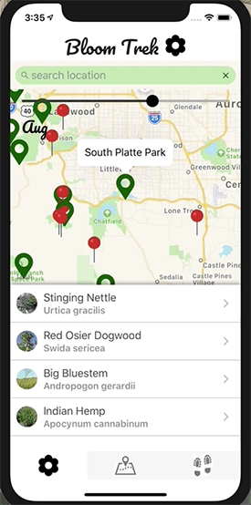
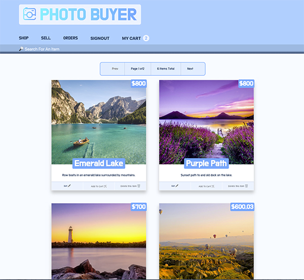
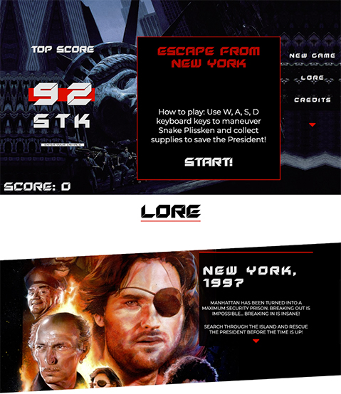

Hello, I'm Chris Boylen. I'm a Software Developer living in Denver, CO.
About
I'm an architectural photographer turned software developer with a
focus on the Front End. I'm passionate about collaborating with
others to create solutions that exceed the dreams of clients. I
truly believe that empathy for the user is the key to good design.
I met my wife in Guatemala. I've traveled the Trans-Siberian Railway
and the Silk Road. I enjoy hiking, photography, and going on
adventures with my daughter.
Contactme with any
questions or comments.
Projects
Bloom Trek
The idea for Bloom Trek was born out of a desire to locate hiking trails around Denver that have flowers that are currently blooming. Bloom Trek displays parks near the user's current location and the corresponding blooming flowers/plants in that area for the current (or chosen) month. Trails within a 10-mile radius of the park are displayed as well. The focus of this project was to be able to effectively collaborate and communicate between all members of our group while trying new technologies. Using an agile process to turn well-defined requirements into deployed and production ready software.
Photo Buyer
Photo Buyer allows users to upload, purchase, and edit photos. It also allows users to sign in and create an account that saves their information to a Prisma database and hosts images on Cloudinary. Photo Buyer was built with React using Apollo Client to fetch data with GraphQL and perform mutations while using a GraphQl Yoga server. Buyers can make secure purchases through Stripe and save their orders to the database. Photo Buyer is tested with Jest using the assertion library Enzyme. Check it out here.
Escape from New York
Escape from New York is recreation of the classic video game snake. I adapted it to have a theme from the 80's movie Escape from New York. Click this link to play.